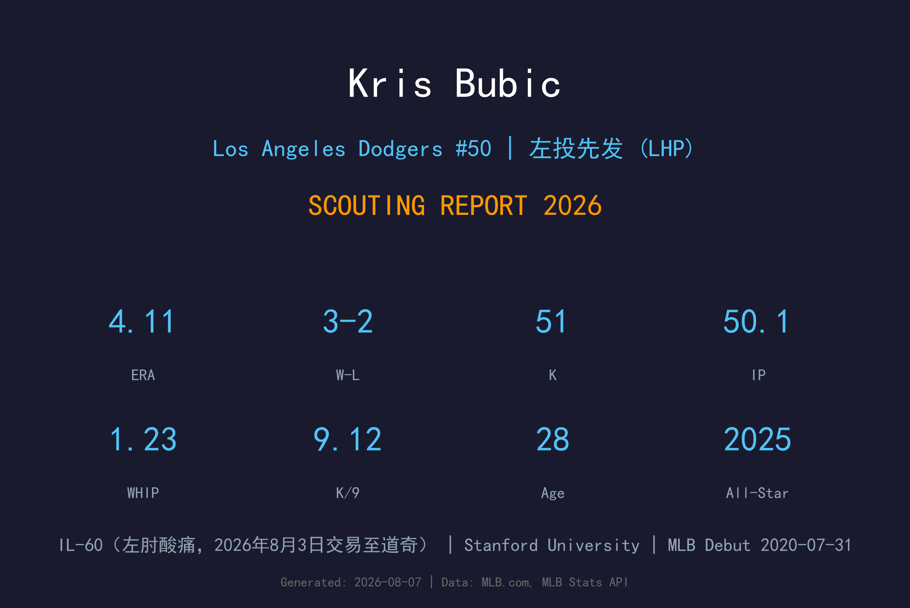
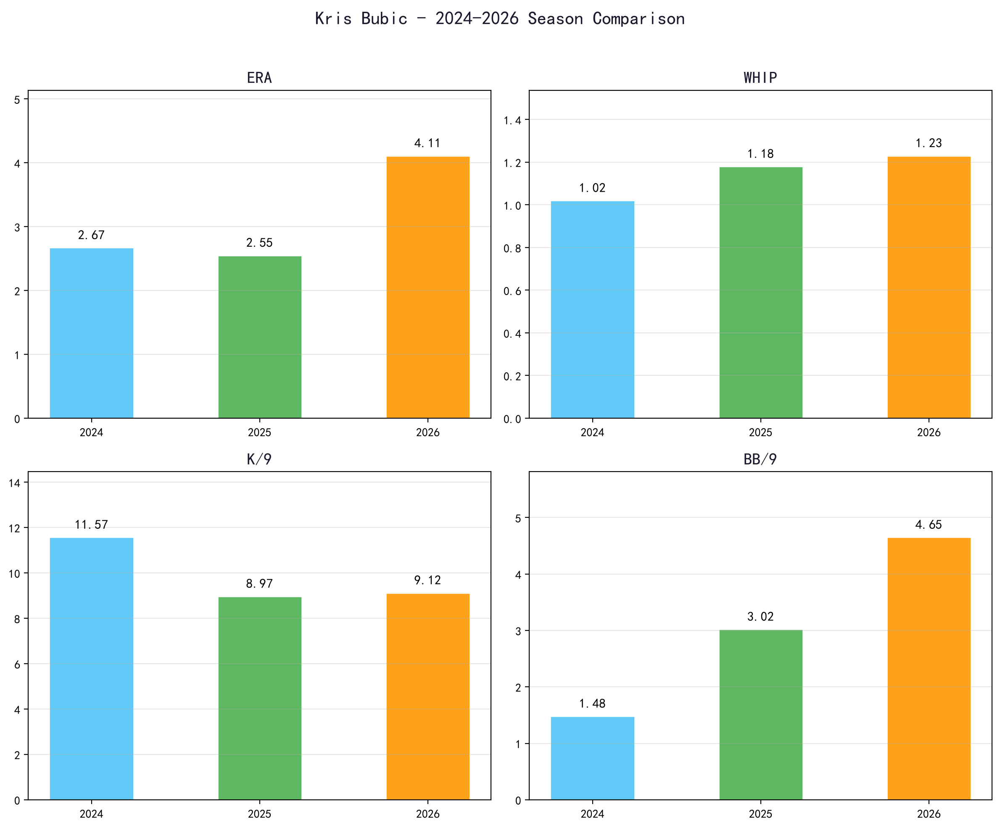
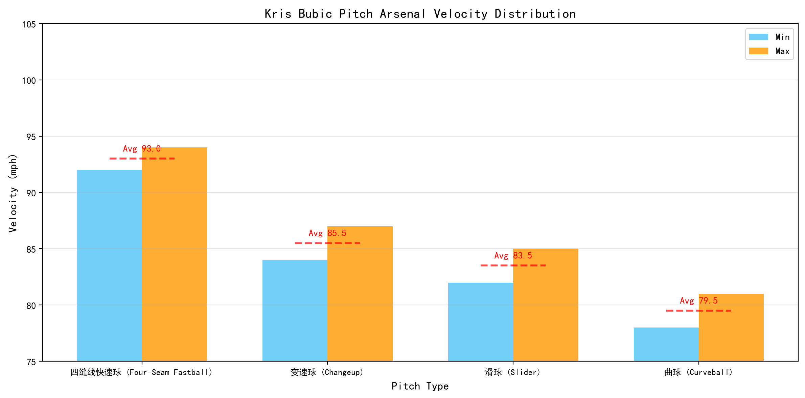
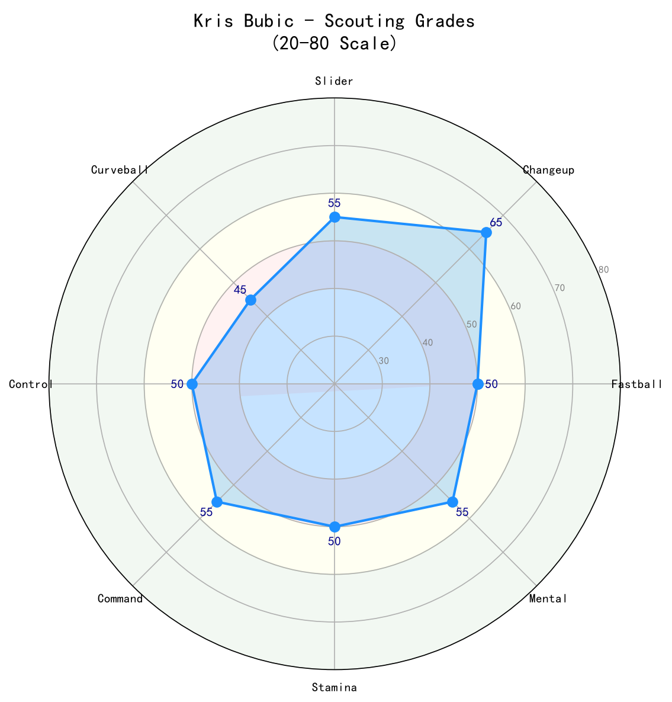

Los Angeles Dodgers #50 | 左投先发 (LHP) | 伤病名单-60（左肘酸痛，2026年8月3日交易至道奇）

Kris Bubic 是一名经历起伏的左投先发，2023年接受 Tommy John 手术后，2024年以牛棚角色强势回归，2025年更以 20 场先发、2.55 ERA 入选美联全明星。然而 2026 年季中左肘再次出问题，7月进入伤病名单，8月3日被交易至道奇时仍位于 伤病名单-60。
Bubic 的招牌武器是变速球，2025年靠着压制全垒打（HR/9 0.46）和稳定控球缴出精英级成绩。他的四缝线快速球均速仅 92-94 mph，不属 elite，但配上变速球与滑球仍能制造大量挥空。2026 年他在皇家 9 场先发 4.11 ERA，三振保送比明显下滑，显示伤病已影响表现。
道奇交易他时赌的是 2025 年全明星版本的反弹。若左肘康复，他能成为轮值后端可靠的左投；若无法恢复，可能转型为长中继或左 specialized reliever。
Kris Bubic 在 Stanford 大学大三时 8-1、2.62 ERA、101 K，Pac-12 冠军成员。2018 年选秀被 Royals 在 CB-A 轮第40顺位选中。
2020年7月31日对 White Sox 先发初登板，成为 Royals 史上第8位在选秀后两季内登上大联盟的先发投手。
20场先发、130局、6-7、4.43 ERA，20次双杀诱导并列联盟第3，写下 Royals 新人连续17.2局无失分纪录。
4月先 adds slider，但仅 3 场先发后接受 Tommy John 手术，整季报销。术后447天于 2024 年7月重返大联盟。
20 场先发、8-7、2.55 ERA、116.1 IP、116 K，HR/9 仅 0.46 全联盟最低（至少20场先发），首次入选全明星赛。
2026年4月改穿 #50，季中因左肘酸痛进入 伤病名单-60，8月3日被 Royals 交易至 Los Angeles Dodgers。道奇赌其康复后重回 2025 年全明星水准。

📈 上图为近三年核心数据趋势。柱状图高度代表该年度表现，便于快速比较球员状态的上升或下滑。
| 赛季 | G | GS | W-L | ERA | IP | K | BB | WHIP | K/9 |
|---|---|---|---|---|---|---|---|---|---|
| 2024 | 27 | 0 | 1-1 | 2.67 | 30.1 | 39 | 5 | 1.02 | 11.57 |
| 2025 | 20 | 20 | 8-7 | 2.55 | 116.1 | 116 | 39 | 1.18 | 8.97 |
| 2026 | 9 | 9 | 3-2 | 4.11 | 50.1 | 51 | 26 | 1.23 | 9.12 |

⚾ 上图为各球种球速区间（蓝=最低球速，橙=最高球速，红线=平均值）。球速差与位移差越大，打者越难锁定单一球路。
92-94 mph
Bubic 的快速球均速约 93 mph，在先发左投中不算 elite。球路进垒点偏高时容易被硬打，但搭配变速球形成速差仍是主要抢 strike 武器。
84-87 mph
Bubic 的招牌球种。出手动作与快速球相似，约 8-9 mph 速差加上下沉位移，能有效让左右打者击出滚地球或挥空。2025 年 HR/9 0.46 的关键功臣。
82-85 mph
2023年开刀前加入的球种。横移明显，主要用来对付右打者，两好球后的出局球。术后复出后使用频率增加，成为搭配变速球的重要武器。
78-81 mph
第四球种，用来打乱节奏和制造不同下坠角度。使用频率较低，品质尚可但非主要出局武器。
Bubic 采用高四分之三出手点，动作流畅且重复性不错。身为左投，他的跨步角度与身体侧对打者，让快速球从较侧角度进入好球带。术后复健团队重点维持他的手臂路径与 后续动作，避免给肘部韧带带来额外压力。
2024 年从 TJ 术后回归，先在小联盟复健，7月升上大联盟后完全以牛棚身份出赛，缴出 2.67 ERA、1.02 WHIP、39 K / 5 BB 的绝佳成绩。2025 年转型回先发，116.1 局、2.55 ERA，并入选全明星，HR/9 0.46 为大联盟先发最低。2026 年 9 场先发 4.11 ERA，三振保送比从 2025 年的 3.0:1 恶化到约 2.0:1，BB/9 从 3.02 上升到 4.65，显示左肘酸痛已影响控球与 控球精准度。
2026 年 4.11 ERA 看似平庸，但前 4 场先发其实仍有亮点。5月中后 BB/9 急剧攀升，WHIP 也达到 1.23，最终因左肘不适进入 伤病名单。50.1 局样本下，他仍能维持 9.12 K/9，说明三振能力未完全消失，但控球与续航明显受肘部影响。
2025 年最亮眼的是全垒打控制：仅 6 轰、HR/9 0.46。2026 年 50.1 局已掉 4 轰，HR/9 回升到 0.71。这通常与控球失准有关——当快速球与变速球无法精准进垒时，打者更容易等到甜球。左肘问题可能让他不敢全力使用变速球，进一步削弱压制力。
Bubic 被交易至道奇时仍位于 伤病名单-60，因此不可能立即先发。复健完成后，道奇可能先让他从长中继或 piggyback 角色开始，逐步增加局数。若恢复 2025 年水准，他能成为轮值后端左投；若肘部持续困扰，可能转为 牛棚 lefty specialist 或 long reliever。

Kris Bubic 的天赋上限是 2025 年全明星版的中段左投先发，但左肘伤病让当前估值大幅下修。若能在道奇医疗体系下康复，他有望在 2027 年提供轮值后段或长中继价值；反之，可能沦为伤病名单常客。
B 级 / 有伤病风险的左投轮值深度
Bubic 的未来几乎完全取决于左肘康复程度。他才 28 岁，技术底子与变速球品质仍在，但 2026 年的肘部复发让球团必须谨慎。
2026 下半季：复健为主，可能 9 月后以牛棚身份短暂回归。
2027：若健康，目标 20-25 场先发或 50-60 局长中继，ERA 3.50-4.20。
2028+：若能维持变速球品质，仍可作为左投轮值后端；否则转为 specialized reliever。
Kristofer Bubic 出生于加州 Cupertino，毕业于 Archbishop Mitty High School。2015 年高中毕业后进入 Stanford University，2018 年大三赛季以 8-1、2.62 ERA、101 次三振的优异成绩帮助 Stanford 夺得 Pac-12 冠军，并获 Golden Spikes Award 季中观察名单提名。
2018 年选秀，Royals 在竞争平衡 A 轮第40顺位选中他。2020 年7月31日，Bubic 对 White Sox 完成大联盟首秀，成为 Royals 史上自 2012 年 Will Smith 以来最年轻以先发身份登板的左投。
2021 年他完整先发 20 场，但 2022 年陷入低潮（5.58 ERA），2023 年仅 3 场先发后因 Tommy John 手术报销。经过 2024 年的牛棚复健与 2025 年的全明星反弹，Bubic 一度被视为 Royals 轮值复兴希望。但 2026 年左肘问题再起，最终在 8 月3 日被交易至道奇，背号改穿 #50。